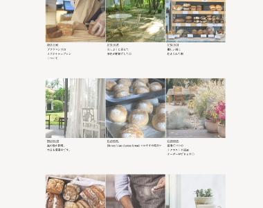
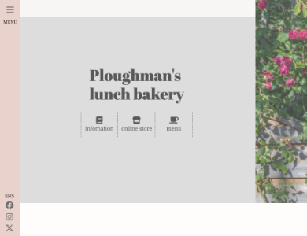

自主制作（架空サイト）
Ploughman’s lunch bakery
Background
制作背景
- クライアント
- 沖縄県中頭郡北中城村に実在するカフェ
- ターゲット
-
- カフェやパンが好きな20~30代女性。
- 周辺地域の住民や県外からの観光客。
- 目的・狙い
-
- お店の世界観や魅力を知ってもらう。
- SNS経由で興味を持った層をサイトの誘導し、集客につなげる。
- 要望
-
- Webサイトをもつことで信頼性を高めたい。
- より多くの集客につなげたい。
Concept
コンセプト
- 与えたいイメージ
- ナチュラル、落ち着き、ゆったり
- フォント
- Shippori Mincho
- カラー
-
落ち着きのあるゆったりした雰囲気を表現するため、薄めのベージュ・グレーなど淡いカラーをベースに、アクセントカラーにピンクを取り入れ、柔らかい女性的な印象を感じられるようにしました。
- ◾️店舗の世界観を表現したデザイン
- 店舗の世界観が伝わるよう、写真を多く取り入れた。また、落ち着きのある印象と柔らかい女性らしさを表現するため、ベースカラーに淡いグレーやベージュ、アクセントカラーに薄いピンクを取り入れた。コンテンツ間の余白を多めに設け、ゆったりした印象を与えられるようにした。
- ◾️整理された情報と構成
- ファーストビューに、需要の高い店舗情報、メニューなどのページへのリンクボタンを設け、お店の魅力を知ってもらえるよう、お知らせやブログなど発信系コンテンツを下層ページに設けた。
- 作業工程
- 企画／設計／ワイヤーフレーム作成／デザイン／コーディング
- 使用ツール・言語
-
- HTML、SCSS（コーディング）
- JavaScript（動的型付け）
- XD（ワイヤーフレーム作成、デザイン）
- Photoshop、Illustrator（画像加工、トリミング）
- 制作期間
-
- ■ 3週間
- 企画：4週間
- 設計、デザイン1週間
- コーディング：1週間
Point
ポイント


Overview
概要